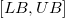

内容 |
ある区間にデータの範囲を反映します。
1. reflection irng:=Col(1) lower:=1 upper:=10;
2. reflection irng:=Col(1) upper:=10 orng:=Col(2);
| 表示 名 |
変数 名 |
I/O と データ型 |
デフォルト 値 |
説明 |
|---|---|---|---|---|
| 入力 | irng |
入力 Range |
<active> |
入力範囲 |
| 下側境界 | lower |
入力 double |
1 |
下側区間境界 デフォルトで、これは入力範囲の最小値となります。 |
| 上側境界 | upper |
入力 double |
1 |
上側区間境界 デフォルトで、これは入力範囲の最大値となります。 |
| 出力 | orng |
出力 Range |
<新規> |
出力範囲 |
古い列に従って新しい列に値を設定します。
与えられた入力範囲Vと出力区間 とすると、V の対称は